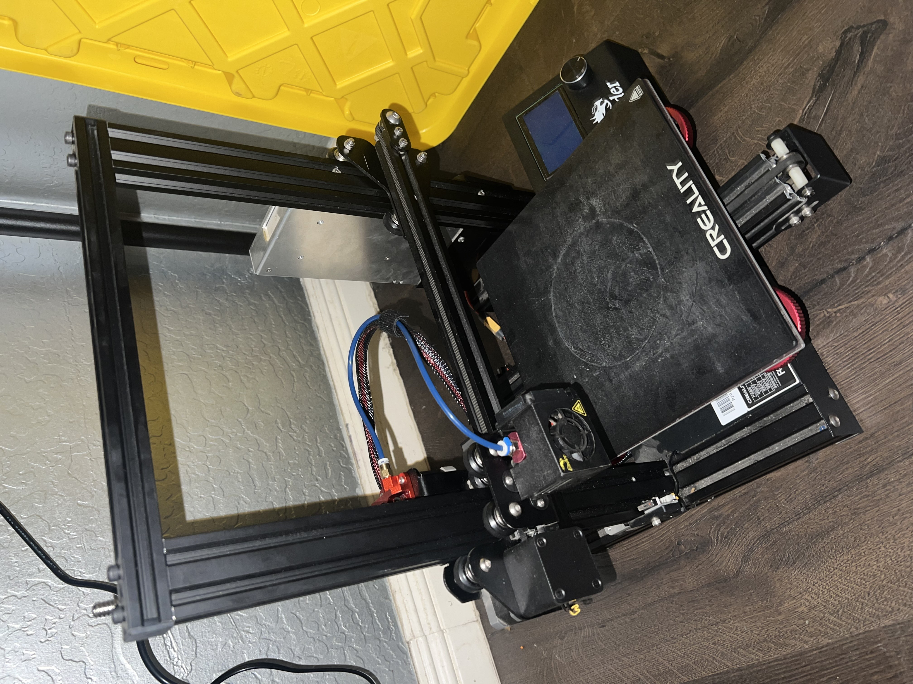
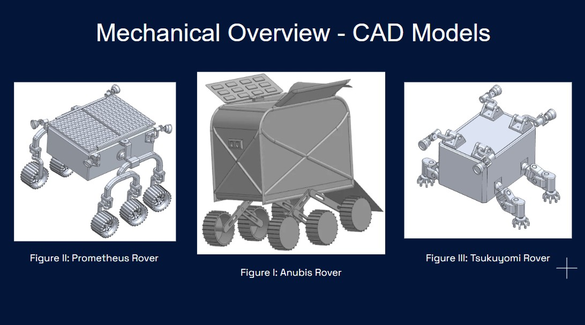
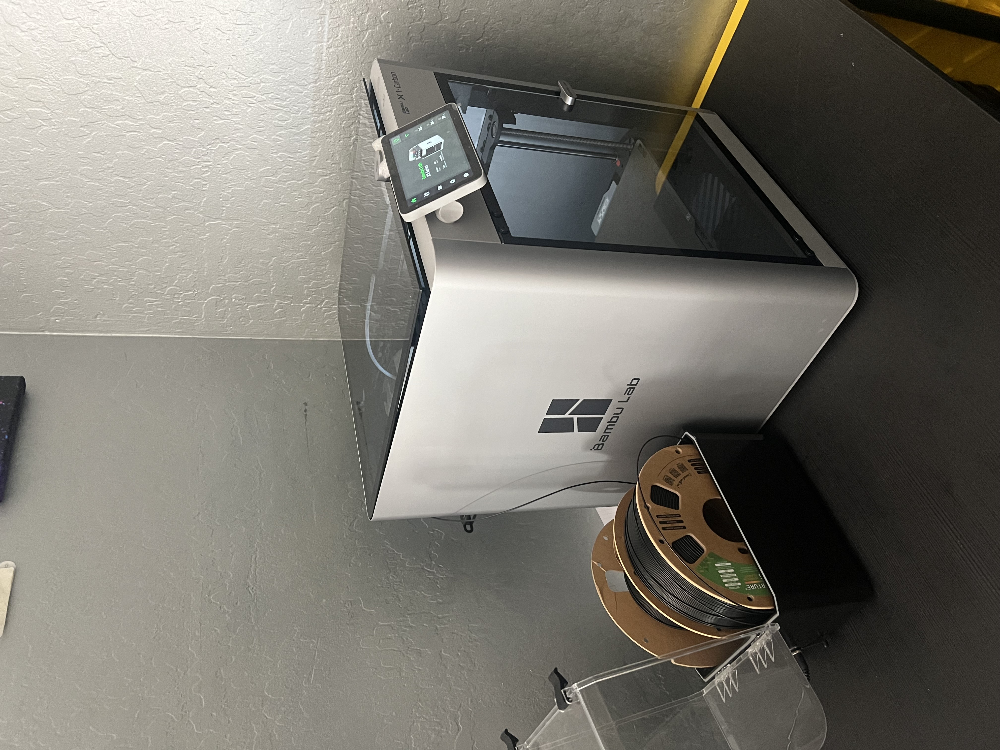
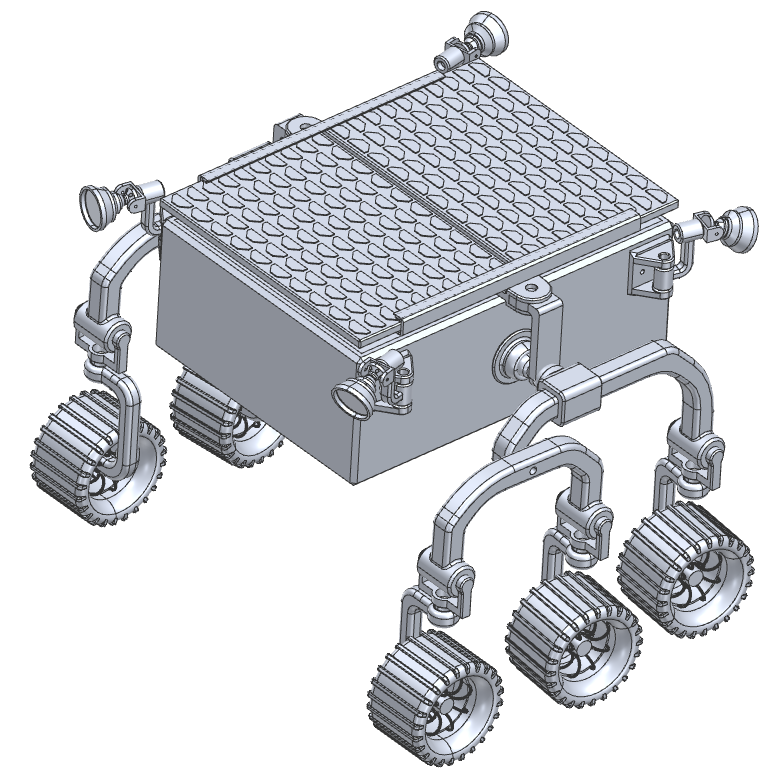
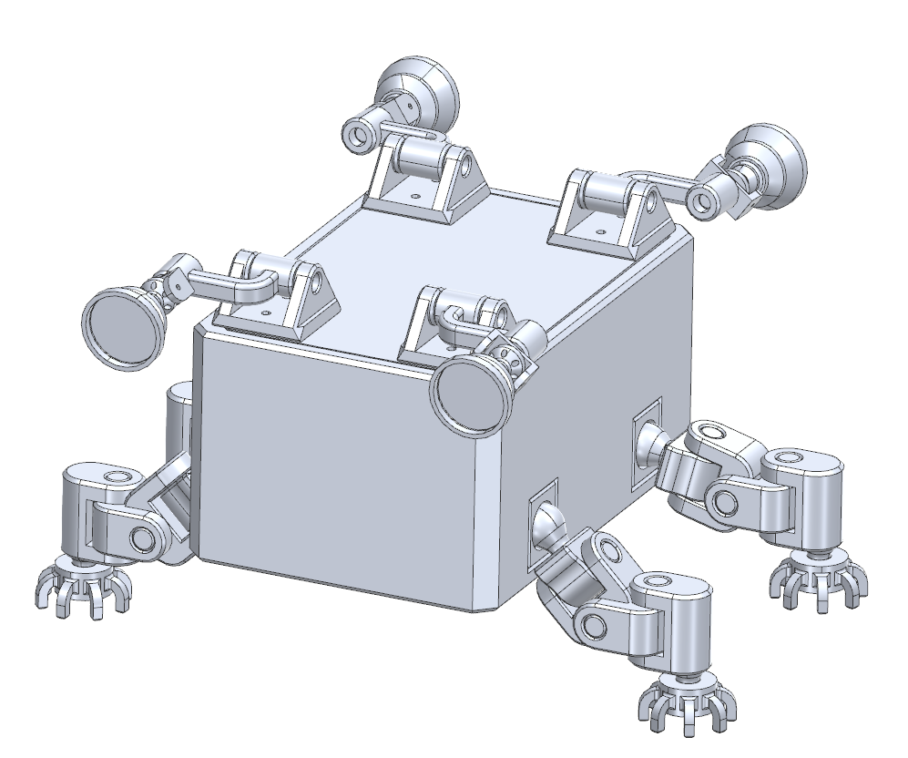
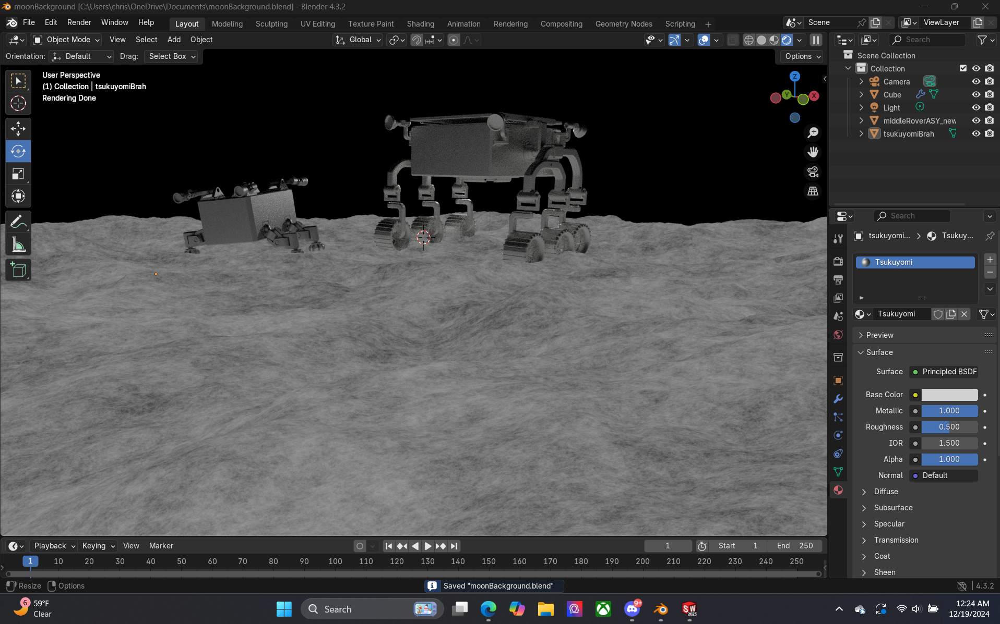
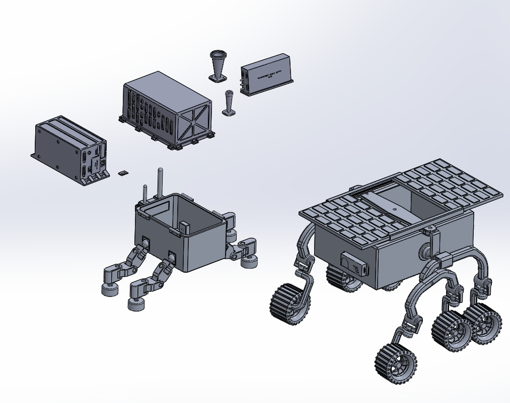
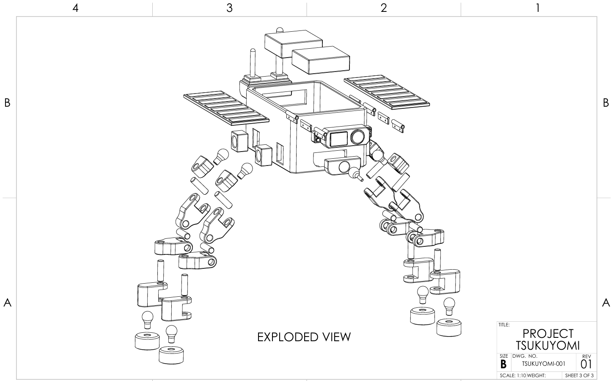
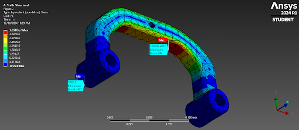
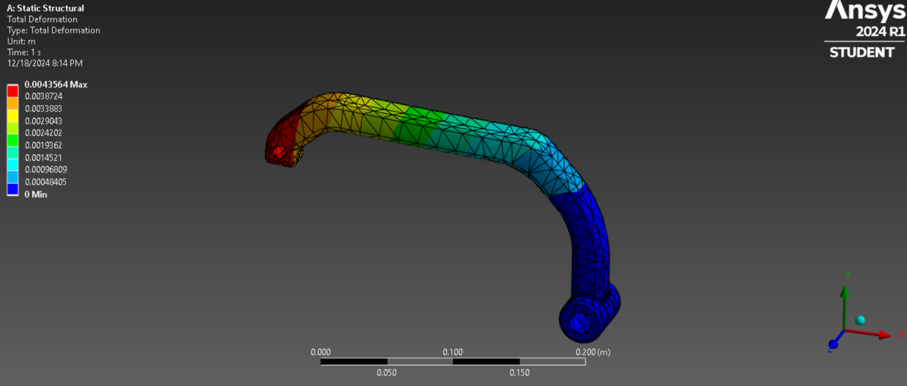

I worked under the guidance of a Senior Engineer (now Chief Engineer), David, at Mercury Systems a while back. Needless to say, David made quite an impression on me. Whenever I had questions on anything design or manufacturing-related, he would always be open to lending an ear. But what stuck with me was that David was a true tinkerer for the 3D Printing community. In honor of all the help he provided to me, I wanted to dedicate a bit to all that I've learned about 3D printing!
I started my 3D printing journey way back in 2019, when I bought the OG entry-level printer: an Ender 3 Pro. I enjoyed this for a while, but my interest in the hobby was on and off then, due to how erratic these printers can be. As I continued through college and work, I gained exposure to various commercial and "prosumer" systems. Eventually, I ended up with my own Bambu Labs X1C and an Elegoo Saturn 3 Ultra!





Here is where my design prowess really kicked into gear. Having developed two out of three rovers from scratch, I was responsible for all components that you see in their depiction. This includes the chassis, suspension, mobility components, and more. As part of my design process, using titanium alloys for durability and regolith resistance. Key features include rocker-bogie suspension components for terrain navigation and adaptive grippers for climbing (on Tsukuyomi specifically). ensured compliance with our mission requirements like a minimum load case load-bearing and thermal protection via FEA and material optimization.


In planning the development of my rovers, part of the process also involved incorporating incorporated redundancies where possible, given the mission constraints of not being able to recover the rovers once they arrived in the lunar environment. As such, I duplicated suspension components, sensor networks, and devised electromechanically-actuated recovery systems that could serve as real-time fault detection. In addition, I made sure that given the expected load cases in the lunar environment that our parts were structurally sound as well. The abrasiveness of the lunar dust, in addition to common loads like vibrations and dynamic distributed loads (e.g. unexpected shock due to traversing the harsh lunar terrain) were all concerns to bear in mind as I designed the rovers.


In collaboration with a peer, we selected key real-world suppliers that could supply raw materials and electromechanical components for the mission at large. Some of these suppliers included Alcoa for all alloys, as well as Maxon Motors for actuators. From there, we collaborated with the programmatics team to devise a reasonable timeline for procurement, fabrication, among other things, landing at a modset 14-25 weeks all in.
I validated designs through CMM inspections, FEA for structural loads, and thermal cycling tests, achieving TRL 7 for mechanical subsystems.